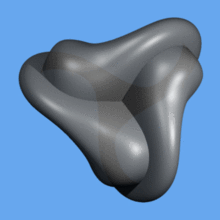
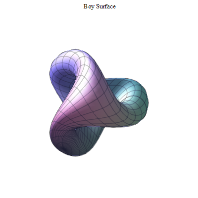
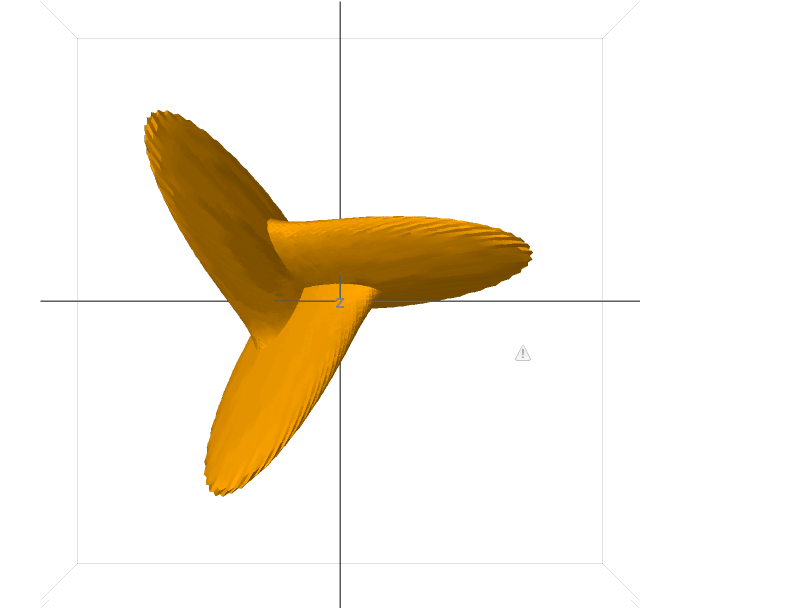

Boy Surface
Warning!
Website is currently under development.In geometry, Boy's surface is an immersion of the real projective plane in 3-dimensional space found by Werner Boy in 1901 (he discovered it on assignment from David Hilbert to prove that the projective plane could not be immersed in 3-space). Unlike the Roman surface and the cross-cap, it has no singularities (i.e., pinch-points), but it does self-intersect.

An animation of Boy's surface
Parametrization of Boy's surface
Boy's surface can be parametrized in several ways. One parametrization, discovered by Rob Kusner and Robert Bryant, is the following: given a complex number $z$ whose magnitude is less than or equal to one ($\lVert{z}\lVert \leq 1$), let
\begin{align} \ g_{1} = - \frac{3}{2}Im \bigg[ \frac{z(1-z^4)}{z^6 + \sqrt{5}z^3 -1 } \bigg]\\ \end{align} \begin{align} \ g_{2} = - \frac{3}{2}Re \bigg[ \frac{z(1+z^4)}{z^6 + \sqrt{5}z^3 -1 } \bigg]\\ \end{align} \begin{align} \ g_{3} = Im \bigg[ \frac{1+z^6}{z^6 + \sqrt{5}z^3 -1 } \bigg] - \frac{1}{2}\\ \end{align}
so that
\begin{align} \begin{pmatrix} x\\ y\\ z\\ \end{pmatrix} = \frac{1}{g_{1}^2 + g_{2}^2 + g_{3}^2} \begin{pmatrix} g_{1}\\ g_{2}\\ g_{3}\\ \end{pmatrix} \end{align}
where $x$, $y$, and $z$ are the desired Cartesian coordinates of a point on the Boy's surface.

A view of the parametrization described here
Maple Sample Code

with(plots); x:=cos(t)*sin(s); y:=sin(t)*sin(s); z:=cos(s); f:=1/2*((2*x^2-y^2-z^2) + 2*y*z*(y^2-z^2) + z*x*(x^2-z^2)+x*y*(y^2-x^2)); g:= sqrt(3)/2*((y^2-z^2) + z*x*(z^2-x^2) + x*y*(y^2-x^2)); h:=(x+y+z)*((x+y+z)^3 + 4*(y-x)*(z-y)*(x-z)); plot3d( [h/8,f,g], s=0..Pi, t=0..Pi)
Sage Sample Code

u, v = var('u,v')
fx = 2/3* (cos(u)* cos(2*v) + sqrt(2)* sin(u)* cos(v))* cos(u) / (sqrt(2) - sin(2*u)* sin(3*v))
fy = 2/3* (cos(u)* sin(2*v) - sqrt(2)* sin(u)* sin(v))* cos(u) / (sqrt(2) - sin(2*u)* sin(3*v))
fz = sqrt(2)* cos(u)* cos(u) / (sqrt(2) - sin(2*u)* sin(3*v))
parametric_plot3d([fx, fy, fz], (u, -2*pi, 2*pi), (v, 0, pi), plot_points = [90,90], frame=False, color="orange")
To Developers
//Source code is not available
References